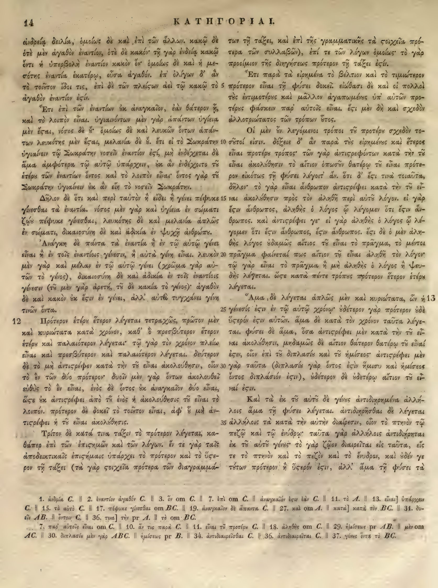

14a
| 1 | ἐνδρείᾳ δειλία, ὁμοίως δὲ καὶ ἐπὶ τῶν ἄλλων. κακῷ δὲ | 0.95 |
|---|---|---|
| 2 | ὁτὲ μὲν ἀγαθὸν ἐναντίον, ὁτὲ δὲ κακόν· τῇ γὰρ ἐνδείᾳ κακῷ | 0.95 |
| 3 | ὄντι ἡ ὑπερβολὴ ἐναντίον κακόν ὄν· ὁμοίως δὲ καὶ ἡ με- | 0.95 |
| 4 | σότης ἐναντία ἑκατέρῳ, οὖσα ἀγαθόν. ἐπ’ ὀλίγων δ’ ἄν | 0.95 |
| 5 | <choice><sic>τὰ τοιοῦτον</sic><corr>τὸ τοιοῦτον</corr></choice> ἴδοι τις, ἐπὶ δὲ τῶν <choice><sic>πλείσων</sic><corr>πλείστων</corr></choice> ἀεὶ τῷ κακῷ τὸ | 0.95 |
| 6 | ἀγαθὸν ἐναντίον <choice><sic>ἐςίν</sic><corr>ἐστίν</corr></choice>. | 0.95 |
| 7 | Ἔτι ἐπὶ τῶν ἐναντίων ἐξ ἀναγκαῖον, ἐὰν θάτερον ᾖ, | 0.95 |
| 8 | καὶ τὸ λοιπὸν εἶναι. ὑγιαινόντων μὲν γὰρ ἁπάντων ὑγίεια | 0.95 |
| 9 | μὲν ἔσται, νόσος δὲ οὔ· ὁμοίως δὲ καὶ λευκῶν ὄντων ἁπάν- | 0.95 |
| 10 | των λευκότης μὲν ἔσται, μελανία δὲ οὔ. ἔτι εἰ τὸ Σωκράτην | 0.95 |
| 11 | ὑγιαίνειν τῷ Σωκράτην νοσεῖν ἐναντίον ἐστί, μὴ ἐνδέχεται δὲ | 0.95 |
| 12 | ἅμα ἀμφότερα τῷ αὐτῷ ὑπάρχειν, οὐκ ἂν ἐνδέχοιτο τῷ | 0.95 |
| 13 | ἑτέρῳ τῶν ἐναντίων ὄντος καὶ τὸ λοιπὸν εἶναι· ὄντος γὰρ τῷ | 0.95 |
| 14 | Σωκράτην ὑγιαίνειν οὐκ ἂν εἴη τὸ νοσεῖν Σωκράτην. | 0.95 |
| 15 | Δῆλον δὲ ὅτι καὶ περὶ ταὐτὸν ἢ εἴδει ἢ γένει πέφυκε | 0.95 |
| 16 | γίνεσθαι τὰ ἐναντία. νόσος μὲν γὰρ καὶ ὑγίεια ἐν σώματι | 0.95 |
| 17 | ζῴου πέφυκε γίνεσθαι, λευκότης δὲ καὶ μελανία ἁπλῶς | 0.95 |
| 18 | ἐν σώματι, δικαιοσύνη δὲ καὶ ἀδικία ἐν ψυχῇ ἀνθρώπου. | 0.95 |
| 19 | Ἀνάγκη δὲ πάντα τὰ ἐναντία ἢ ἐν τῷ αὐτῷ γένει | 0.95 |
| 20 | εἶναι ἢ ἐν τοῖς ἐναντίοις γένεσιν, ἢ αὐτὰ γένη εἶναι. λευκὸν | 0.95 |
| 21 | μὲν γὰρ καὶ μέλαν ἐν τῷ αὐτῷ γένει (χρῶμα γὰρ ἀμ- | 0.95 |
| 22 | φοῖν τὸ γένος), δικαιοσύνη δὲ καὶ ἀδικία ἐν τοῖς ἐναντίοις | 0.95 |
| 23 | γένεσιν (τῷ μὲν γὰρ ἀρετή, τῷ δὲ κακία τὸ γένος)· ἀγαθὸν | 0.95 |
| 24 | δὲ καὶ κακὸν οὐκ ἔστιν ἐν γένει, ἀλλ’ αὐτὰ τυγχάνει γένη | 0.95 |
| 25 | τινῶν ὄντα. | 0.95 |
| 26 | Πρότερον ἑτέρου ἕτερον λέγεται τετραχῶς, πρῶτον μὲν | 0.95 |
| 27 | καὶ κυριώτατα κατὰ χρόνον, καθ’ ὃ πρεσβύτερον ἕτερον | 0.95 |
| 28 | ἑτέρου καὶ παλαιότερον λέγεται· τῷ γὰρ τὸν χρόνον πλείω | 0.95 |
| 29 | εἶναι καὶ πρεσβύτερον καὶ παλαιότερον λέγεται. δεύτερον | 0.95 |
| 30 | δὲ τὸ μὴ ἀντιστρέφειν κατὰ τὴν τοῦ εἶναι ἀκολούθησιν, οἷον | 0.95 |
| 31 | τὸ ἓν τῶν δύο πρότερον· δυοῖν μὲν γὰρ ὄντοιν ἀκολουθεῖ | 0.95 |
| 32 | εὐθὺς τὸ ἓν εἶναι, ἑνὸς δὲ ὄντος οὐκ ἀναγκαῖον δύο εἶναι, | 0.95 |
| 33 | ὥστε οὐκ ἀντιστρέφει ἀπὸ τοῦ ἑνὸς ἡ ἀκολούθησις τοῦ εἶναι τὸ | 0.95 |
| 34 | λοιπόν. πρότερον δὲ δοκεῖ τὸ τοιοῦτον εἶναι, ἀφ’ οὗ μὴ ἀν- | 0.95 |
| 35 | τιστρέφει ἡ τοῦ εἶναι ἀκολούθησις. | 0.95 |
| 36 | Τρίτον δὲ κατὰ τινα τάξιν τὸ πρότερον λέγεται, κα- | 0.95 |
| 37 | θάπερ ἐπὶ τῶν ἐπιστημῶν καὶ τῶν λόγων. ἐν τε γὰρ ταῖς | 0.95 |
| 38 | ἀποδεικτικαῖς ἐπιστήμαις ὑπάρχει τὸ πρότερον καὶ τὸ ὕστε- | 0.95 |
| 39 | ρον τῇ τάξει (τὰ γὰρ στοιχεῖα πρότερα τῶν διαγραμμά- | 0.95 |
14b
| 1 | των τῇ τάξει, καὶ ἐπὶ τῆς γραμματικῆς τὰ <choice><sic>ςοιχεῖα</sic><corr>στοιχεῖα</corr></choice> πρό- | 0.90 |
|---|---|---|
| 2 | τερα τῶν συλλαβῶν), ἐπί τε τῶν λόγων ὁμοίως· τὸ γὰρ | 0.90 |
| 3 | προοίμιον τῆς διηγήσεως πρότερον τῇ τάξει <choice><sic>ἐςίν</sic><corr>ἐστίν</corr></choice>. | 0.90 |
| 4 | Ἔτι παρὰ τὰ εἰρημένα τὸ βέλτιον καὶ τὸ τιμιώτερον | 0.90 |
| 5 | πρότερον εἶναι τῇ φύσει δοκεῖ. εἰώθασι δὲ καὶ οἱ πολλοὶ | 0.90 |
| 6 | τοὺς ἐντίμους καὶ μᾶλλον ἀγαπωμένους ὑπ’ αὐτῶν προ- | 0.90 |
| 7 | τέρους φάσκειν παρ’ αὐτοῖς εἶναι. <choice><sic>ἔςι</sic><corr>ἔστι</corr></choice> μὲν δὴ καὶ σχεδὸν | 0.90 |
| 8 | φιλοτιμώτατος τῶν τρόπων οὗτος. | 0.90 |
| 9 | Οἱ μὲν οὖν λεγόμενοι τρόποι τοῦ προτέρου σχεδὸν το- | 0.90 |
| 10 | σοῦτοί εἰσιν. δόξειε δ’ ἂν παρὰ τὰς εἰρημένας καὶ ἕτερος | 0.90 |
| 11 | εἶναι πρότερός τις τρόπος· τῶν γὰρ <choice><sic>ἀντιςρεφόντων</sic><corr>ἀντιστρεφόντων</corr></choice> κατὰ τὴν τοῦ | 0.90 |
| 12 | εἶναι ἀκολούθησιν τὸ αἴτιον ὁπωσοῦν θατέρῳ τοῦ εἶναι πρότε- | 0.90 |
| 13 | ρον εἰκότως τῇ φύσει λέγοιτ’ ἄν. ὅτι δ’ <choice><sic>ἔςι</sic><corr>ἔστι</corr></choice> τινὰ τοιαῦτα, | 0.90 |
| 14 | δῆλον· τὸ γὰρ εἶναι ἄνθρωπον <choice><sic>ἀντιςρέφει</sic><corr>ἀντιστρέφει</corr></choice> κατὰ τὴν τοῦ εἶ- | 0.90 |
| 15 | ναι ἀκολούθησιν πρὸς τὸν ἀληθῆ περὶ αὐτοῦ λόγον. εἰ γάρ | 0.90 |
| 16 | ἐστιν ἄνθρωπος, ἀληθὴς ὁ λόγος ᾧ λέγομεν ὅτι ἐστὶν ἄν- | 0.90 |
| 17 | θρωπος. καὶ ἀντιστρέφει γε· εἰ γὰρ ἀληθὴς ὁ λόγος ᾧ λέ- | 0.90 |
| 18 | γομεν ὅτι ἐστὶν ἄνθρωπος, ἔστιν ἄνθρωπος. ἔστι δὲ ὁ μὲν ἀλη- | 0.90 |
| 19 | θὴς λόγος οὐδαμῶς αἴτιος τοῦ εἶναι τὸ πρᾶγμα, τὸ μέντοι | 0.90 |
| 20 | πρᾶγμα φαίνεταί πως αἴτιον τοῦ εἶναι ἀληθῆ τὸν λόγον· | 0.90 |
| 21 | τῷ γὰρ εἶναι τὸ πρᾶγμα ἢ μὴ ἀληθὴς ὁ λόγος ἢ ψευ- | 0.90 |
| 22 | δὴς λέγεται. ὥστε κατὰ πέντε τρόπους πρότερον ἕτερον ἑτέρου | 0.90 |
| 23 | λέγεται. | 0.90 |
| 24 | Ἅμα δὲ λέγεται ἁπλῶς μὲν καὶ κυριώτατα, ὧν ἡ | 0.90 |
| 25 | γένεσίς ἐστιν ἐν τῷ αὐτῷ χρόνῳ· οὐδέτερον γὰρ πρότερον οὐδὲ | 0.90 |
| 26 | ὕστερον ἔστιν αὐτῶν. ἅμα δὲ κατὰ τὸν χρόνον ταῦτα λέγε- | 0.90 |
| 27 | ται. φύσει δὲ ἅμα, ὅσα <choice><sic>ἀντιςρέφει</sic><corr>ἀντιστρέφει</corr></choice> μὲν κατὰ τὴν τοῦ εἶ- | 0.90 |
| 28 | ναι ἀκολούθησιν, μηδαμῶς δὲ αἴτιον θάτερον θατέρῳ τοῦ εἶναι | 0.90 |
| 29 | ἔστιν, οἷον ἐπὶ τοῦ διπλασίου καὶ τοῦ ἡμίσεος· <choice><sic>ἀντιςρέφει</sic><corr>ἀντιστρέφει</corr></choice> μὲν | 0.90 |
| 30 | γὰρ ταῦτα (διπλάσιον γὰρ ὄντος ἔστιν ἥμισυ καὶ ἡμίσεος | 0.90 |
| 31 | ὄντος διπλάσιόν ἐστιν), οὐδέτερον δὲ οὐδετέρῳ αἴτιον τοῦ εἶ- | 0.90 |
| 32 | ναί <choice><sic>ἐςιν</sic><corr>ἐστιν</corr></choice>. | 0.90 |
| 33 | Καὶ τὰ ἐκ τοῦ αὐτοῦ δὲ γένους ἀντιδιῃρημένα ἀλλή- | 0.90 |
| 34 | λοις ἅμα τῇ φύσει λέγεται. ἀντιδιῃρῆσθαι δὲ λέγεται | 0.90 |
| 35 | ἀλλήλοις τὰ κατὰ τὴν αὐτὴν διαίρεσιν, οἷον τὸ πτηνὸν τῷ | 0.90 |
| 36 | πεζῷ καὶ τῷ ἐνύδρῳ· ταῦτα γὰρ ἀλλήλοις ἀντιδιῄρηται | 0.90 |
| 37 | ἐκ τοῦ αὐτοῦ γένους· τὸ γὰρ ζῷον διαιρεῖται εἰς ταῦτα, εἰς | 0.90 |
| 38 | τε τὸ πτηνὸν καὶ τὸ πεζὸν καὶ τὸ ἔνυδρον, καὶ οὐδέν γε | 0.90 |
| 39 | τούτων πρότερον ἢ ὕστερόν <choice><sic>ἐςιν</sic><corr>ἐστιν</corr></choice>, ἀλλ’ ἅμα τῇ φύσει τὰ | 0.90 |
Textual apparatus
- n1 [both] 1. ἀνδρίᾳ C. || 2. ἐναντίον ἀγαθόν C. || 3. ὃν om C. || 7. ἐπὶ om C. || ἀναγκαῖον ἔσιν ἐὰν C. || 11. τὸ A. || 13. εἶναι] ὑπάρχειν C. || 15. τὰ αὐτὸ C. || 17. πέφυκε γίνεσθαι om BC. || 19. ἀναγκαῖον δὲ ἅπαντα C. || 27. καὶ om A. || κατὰ] κατὰ τὸν BC. || 31. δυν-
- n2 [both] δυν-
- n3 [both] ατὸν AB. || ὅτων C. || 36. τινα] τὴν pr A. || τὸ om BC.
- n4 [both] 7. παρ' αὐτοῖς εἶναι om C. || 10. ἄν τις παρὰ C. || 11. εἶναι τὸ προτέρῳ C. || 18. ἀληθὴς om C. || 29. ἡμίσεως pr AB. || μὲν om AC. || 30. διπλασίᾳ μὲν γὰρ ABC. || ἡμίσεως pr B. || 34. ἀντιδιαιρεῖσθαι C. || 36. ἀντιδιαιρεῖται C. || 37. γένος ὄντα τὸ BC.
Verifier issues
- No verifier or gutter-overlap issues.
Encoded TEI corrections (13)
- a5: <choice><sic>τὰ τοιοῦτον</sic><corr>τὸ τοιοῦτον</corr></choice> (0.90) — The scan shows the neuter article τὸ before τοιοῦτον, not the plural τὰ; the OCR witness also reads 'τὰ' but the image confirms the singular form.
- a5: <choice><sic>πλείσων</sic><corr>πλείστων</corr></choice> (1.00) — Aligned Hathi στ-ligature OCR correction: deterministic repair of the Hathi internal final sigma agrees with the scan and reference crop.
- a6: <choice><sic>ἐςίν</sic><corr>ἐστίν</corr></choice> (1.00) — Aligned Hathi στ-ligature OCR correction: deterministic repair of the Hathi internal final sigma agrees with the scan and reference crop.
- b1: <choice><sic>ςοιχεῖα</sic><corr>στοιχεῖα</corr></choice> (1.00) — Aligned Hathi στ-ligature OCR correction: deterministic repair of the Hathi internal final sigma agrees with the scan and reference crop.
- b3: <choice><sic>ἐςίν</sic><corr>ἐστίν</corr></choice> (1.00) — Aligned Hathi στ-ligature OCR correction: deterministic repair of the Hathi internal final sigma agrees with the scan and reference crop.
- b7: <choice><sic>ἔςι</sic><corr>ἔστι</corr></choice> (1.00) — Aligned Hathi στ-ligature OCR correction: deterministic repair of the Hathi internal final sigma agrees with the scan and reference crop.
- b11: <choice><sic>ἀντιςρεφόντων</sic><corr>ἀντιστρεφόντων</corr></choice> (1.00) — Aligned Hathi στ-ligature OCR correction: deterministic repair of the Hathi internal final sigma agrees with the scan and reference crop.
- b13: <choice><sic>ἔςι</sic><corr>ἔστι</corr></choice> (1.00) — Aligned Hathi στ-ligature OCR correction: deterministic repair of the Hathi internal final sigma agrees with the scan and reference crop.
- b14: <choice><sic>ἀντιςρέφει</sic><corr>ἀντιστρέφει</corr></choice> (1.00) — Aligned Hathi στ-ligature OCR correction: deterministic repair of the Hathi internal final sigma agrees with the scan and reference crop.
- b27: <choice><sic>ἀντιςρέφει</sic><corr>ἀντιστρέφει</corr></choice> (1.00) — Aligned Hathi στ-ligature OCR correction: deterministic repair of the Hathi internal final sigma agrees with the scan and reference crop.
- b29: <choice><sic>ἀντιςρέφει</sic><corr>ἀντιστρέφει</corr></choice> (1.00) — Aligned Hathi στ-ligature OCR correction: deterministic repair of the Hathi internal final sigma agrees with the scan and reference crop.
- b32: <choice><sic>ἐςιν</sic><corr>ἐστιν</corr></choice> (1.00) — Aligned Hathi στ-ligature OCR correction: deterministic repair of the Hathi internal final sigma agrees with the scan and reference crop.
- b39: <choice><sic>ἐςιν</sic><corr>ἐστιν</corr></choice> (1.00) — Aligned Hathi στ-ligature OCR correction: deterministic repair of the Hathi internal final sigma agrees with the scan and reference crop.